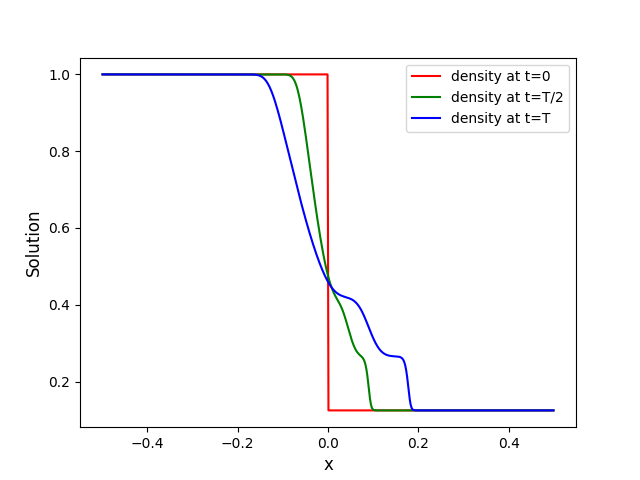

Step-by-step in C++#
This page shows you how to setup, build, run and visualize your first problem in C++.
For demonstration purposes, we show how to run the 1D Sod problem, but the same process applies to every other problem.
Hint
You can copy each snippet below by moving your mouse over the snippet’s box, and clicking the copy icon appearing on the top-right corner.
Step 1: Prepare#
The C++ library is header-only so it does not need to be compiled and installed.
export CXX=<path-to-your-CXX-compiler> # must support C++17
export MYTEST=/home/myDemoTest
mkdir $MYTEST && cd $MYTEST
git clone --recursive git@github.com:Pressio/pressio-demoapps.git
cd pressio-demoapps
Step 2: Generate the mesh#
python3 $MYTEST/pressio-demoapps/meshing_scripts/create_full_mesh_for.py \
--problem sod1d_s7 --outdir ${MYTEST}/mesh -n 500
where sod1d_s7 specifies that we want Sod1d and
a 7-point stencil, and 500 is the number of cells.
The mesh files are generated inside ${MYTEST}/mesh.
Step 3: Create Main File#
Create a main.cpp as follows:
touch $MYTEST/main.cpp
and open it in a text editor.
The next sections explain the program line-by-line. To jump to the complete, uncommented code, see Complete File.
Includes#
First, we need to include Pressio’s explicit steppers. These are abstractions that represent “how” to take a step when applying an explicit scheme to initial value problems.
You can read more about them in the pressio-rom documentation.
#include "pressio/ode_steppers_explicit.hpp"
Next, we need functions to advance our stepper object forward in time.
#include "pressio/ode_advancers.hpp"
Finally, we include the default 1D Euler problem that we will solve (more information on the problem can be found here).
#include "pressiodemoapps/euler1d.hpp"
Observer class to monitor and sample the simulation’s state#
In order to write out the state with a specified frequency, we need to create an instance of the observer class. This can be implemented with the following code:
template <typename StateType>
class Observer
{
public:
Observer(const std::string & f0, int freq)
: myfile0_(f0, std::ios::out | std::ios::binary),
sampleFreq_(freq){}
~Observer(){
myfile0_.close();
}
template<typename TimeType>
void operator()(const pressio::ode::StepCount stepIn,
const TimeType /*currentTime, unused*/,
const StateType & state)
{
const auto step = stepIn.get();
if (step % sampleFreq_ == 0){
const std::size_t ext = state.size()*sizeof(double);
myfile0_.write(reinterpret_cast<const char*>(&state(0)), ext);
}
}
private:
std::ofstream myfile0_;
int sampleFreq_ = {};
};
main()#
Create your main function:
int main() {}
Note
All of the subsequent code will go inside of the main() function.
First, we’ll create an alias to simplify our program.
namespace pda = pressiodemoapps;
Then we load the mesh that we created in Step 2: Generate the mesh.
const auto meshObj = pda::load_cellcentered_uniform_mesh_eigen(".");
Note
"." (above) assumes that mesh/ is located in the same directory as main.cpp (this should be your $MYTEST directory).
For this demonstration, we will use First-Order Inviscid Flux Reconstruction.
constexpr auto order = pda::InviscidFluxReconstruction::FirstOrder;
Now we create the simulation problem for Euler 1D equations and initialize the state.
auto appObj = pda::create_problem_eigen(meshObj, pda::Euler1d::Sod, order);
using app_t = decltype(appObj);
using state_t = typename app_t::state_type;
state_t state = appObj.initialCondition();
We use built-in time stepping with Runge-Kutta4 and instantiate our Observer class such that the state is observed and saved to file every step.
auto stepperObj = pressio::ode::create_rk4_stepper(appObj);
const int observeEveryNSteps = 1;
Observer<state_t> Obs("sod1d_solution.bin", observeEveryNSteps);
Then we set our simulation parameters, where dt is the time step size and
the total number of steps is given by Nsteps.
const auto dt = 0.001;
const auto Nsteps = pressio::ode::StepCount(100);
Then we advance the simulation forward Nsteps.
pressio::ode::advance_n_steps(stepperObj, state, 0., dt, Nsteps, Obs);
Finally, we return 0 if the process succeeds.
return 0;
Complete File#
The full, uncommented file is:
#include "pressio/ode_steppers_explicit.hpp"
#include "pressio/ode_advancers.hpp"
#include "pressiodemoapps/euler1d.hpp"
template <typename StateType>
class Observer
{
public:
Observer(const std::string & f0, int freq)
: myfile0_(f0, std::ios::out | std::ios::binary),
sampleFreq_(freq){}
~Observer(){
myfile0_.close();
}
template<typename TimeType>
void operator()(const pressio::ode::StepCount stepIn,
const TimeType /*currentTime, unused*/,
const StateType & state)
{
const auto step = stepIn.get();
if (step % sampleFreq_ == 0){
const std::size_t ext = state.size()*sizeof(double);
myfile0_.write(reinterpret_cast<const char*>(&state(0)), ext);
}
}
private:
std::ofstream myfile0_;
int sampleFreq_ = {};
};
int main()
{
namespace pda = pressiodemoapps;
const auto meshObj = pda::load_cellcentered_uniform_mesh_eigen(".");
constexpr auto order = pda::InviscidFluxReconstruction::FirstOrder;
auto appObj = pda::create_problem_eigen(meshObj, pda::Euler1d::Sod, order);
using app_t = decltype(appObj);
using state_t = typename app_t::state_type;
state_t state = appObj.initialCondition();
auto stepperObj = pressio::ode::create_rk4_stepper(appObj);
const int observeEveryNSteps = 1;
Observer<state_t> Obs("sod1d_solution.bin", observeEveryNSteps);
const auto dt = 0.001;
const auto Nsteps = pressio::ode::StepCount(100);
pressio::ode::advance_n_steps(stepperObj, state, 0., dt, Nsteps, Obs);
return 0;
}
Step 4: Compile and Run#
You can compile main.cpp either on the command line or using cmake.
Command line#
$CXX \
-I $MYTEST/pressio-demoapps/include \
-I $MYTEST/pressio-demoapps/tpls/eigen3 \
-I $MYTEST/pressio-demoapps/tests_cpp/pressio/include \
main.cpp -o main
Running#
Once you have compiled your code, you will have a new main executable in $MYTEST.
To execute it, simply run:
./main
Step 5: Visualize Results#
Running main will produce a binary file sod1d_solution.bin that holds the state
at every timestep.
To visualize the results, you can use the following steps.
Create a Python file,
plot.py, in the$MYTESTdirectory and fill its content with:
#!/usr/bin/env python3
import matplotlib.pyplot as plt
from matplotlib import cm
import numpy as np
from numpy import linalg as LA
import re
def extractN(ns):
reg = re.compile(r''+ns+'.+')
file1 = open('mesh/info.dat', 'r')
strings = re.search(reg, file1.read())
file1.close()
assert(strings)
return int(strings.group().split()[1])
##########################
if __name__== "__main__":
##########################
nx = extractN('nx')
print(nx)
fomTotDofs = nx*3
x = np.loadtxt('mesh/coordinates.dat', dtype=float)[:,1]
data = np.fromfile("sod1d_solution.bin")
nt = int(np.size(data)/fomTotDofs)
print("fomTest: nt = ", nt)
data = np.reshape(data, (nt, fomTotDofs))
fig = plt.figure(1)
density_t0 = np.reshape(data[0,:], (nx, 3))[:,0]
density_thalf = np.reshape(data[int(nt/2),:], (nx, 3))[:,0]
density_tfinal = np.reshape(data[nt-1,:], (nx, 3))[:,0]
plt.plot(x, density_t0, '-r', label='density at t=0')
plt.plot(x, density_thalf, '-g', label='density at t=T/2')
plt.plot(x, density_tfinal, '-b', label='density at t=T')
plt.xlabel("x", fontsize=12)
plt.ylabel("Solution", fontsize=12)
plt.legend()
fig.savefig("solution.png", format="png", bbox_inches='tight', dpi=450)
plt.show()
Note
You may have to specify the paths to info.data and coordinates.dat (which are in the the mesh directory that you generated in Step 2: Generate the mesh).
Run the script from your
$MYTESTdirectory.
Note
You may need to install some packages, like numpy or matplotlib, into your Python environment.
python visualize_state.py
This should display the following figure:
{kind=link}